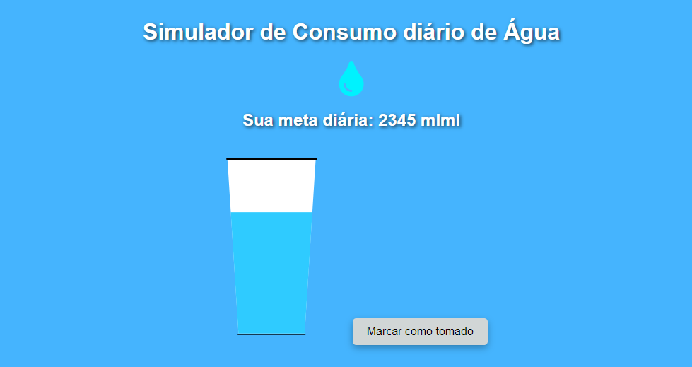

×

Meu Portfólio
Currículo
Ver Currículo

Drop Reminder
O Drop Reminder é um simulador interativo de consumo de água, desenvolvido para ajudar os usuários a monitorar sua ingestão diária de líquidos. O sistema permite calcular a quantidade recomendada de água com base no peso do usuário e acompanha o progresso, preenchendo visualmente um copo conforme o consumo é registrado.
Ver Projeto